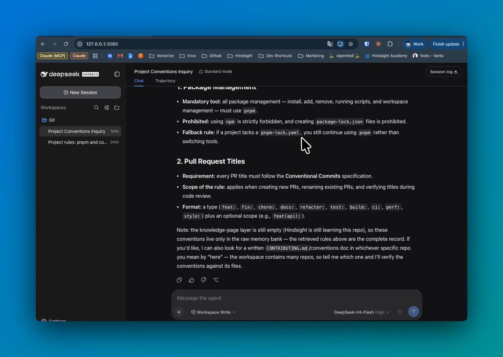
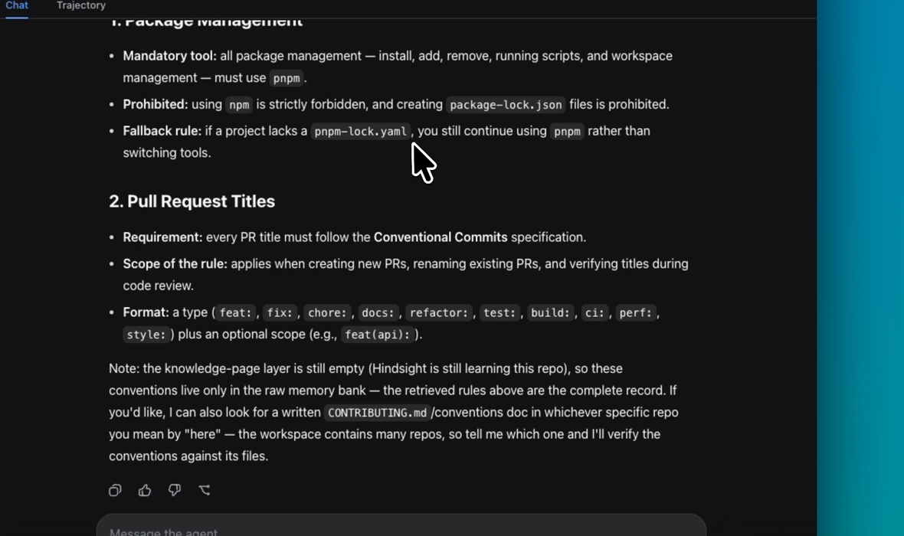
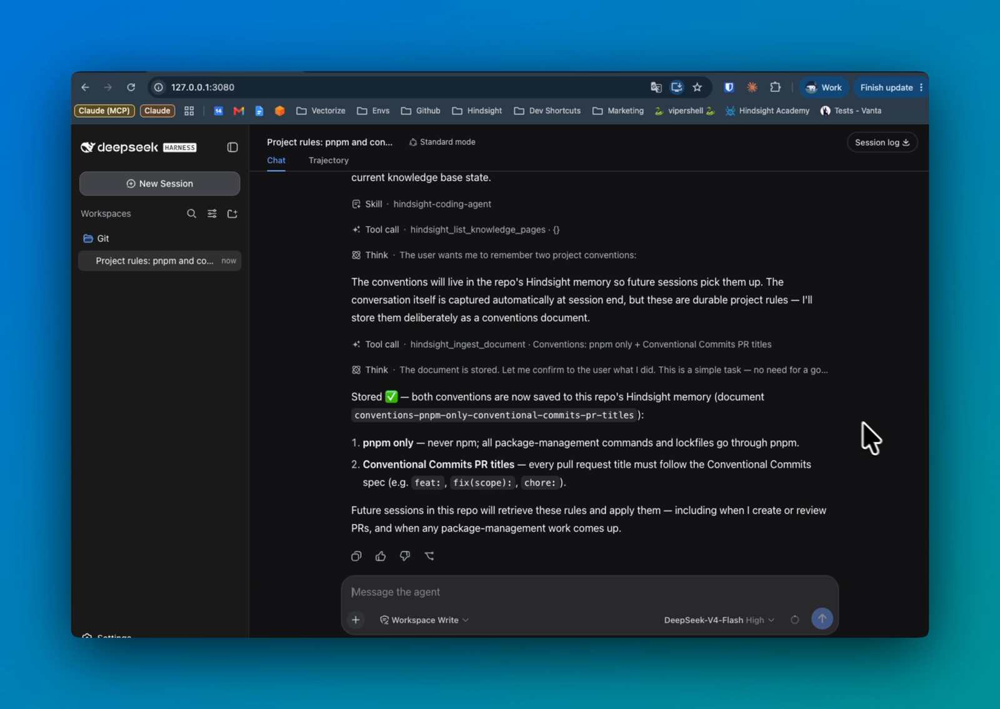
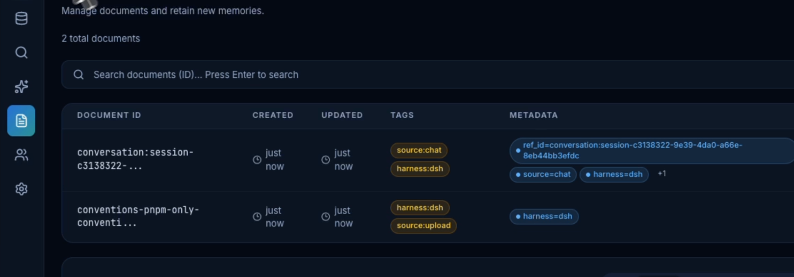

上一篇 modlens 解决的是"看得见"——给纯文本模型外挂视觉引擎。这一篇解决另一层的老问题：记不住。先对号入座，看这三个场景你熟不熟。
场景一：新会话重新交代。 上周你花了一整个会话和 agent 掰扯清楚：这个仓库用 pnpm 不用 npm、PR 标题必须按 Conventional Commits 写、某个接口为什么砍掉重做。今天开个新会话，它一个都不记得，你要么重新交代一遍，要么看它把踩过的坑再踩一遍。
场景二：换 agent 记忆清零。 你在 Claude Code 里攒下的项目约定，换到 dsh 干活又从零开始——每个工具各记各的，你的项目历史被切碎在五六个工具的会话记录里。
场景三：调试时翻不到旧讨论。 明明记得"这个 bug 上周讨论过，当时定了方案"，但记录散落在某个会话里，agent 查不到，你自己翻也要翻半天。
这三个场景是同一个病：项目知识的存活时间等于会话的存活时间。hindsight（vectorize-io，22.2k star）给 agent 装了个长期记忆库：按仓库分库，自动记录每次会话，下次会话自动召回。一句话定位会话结束自动存，会话开始自动忆。还是系列固定四段：接入、使用、截图切图看功能、源码简单分析大概实现。
● ● ●
先把最关心的成本说了：
dsh plugin --profile hs07 add @vectorize-io/hindsight-coding-agents@latest
# 96 个包，1.5s（85 个直接复用本地 pnpm store 缓存）
装完不需要改任何 dsh 配置。挂载机制是声明式的：插件自己的 package.json 里声明了 dsh.bundle.patch 指向自带的 cordis.patch.yml，dsh 装插件时看到这个声明，就把这份 patch 追加进 profile 的 bundle 清单。patch 内容只有一行——在宿主层插入一个 id 为 hindsight 的 Cordis 插件，指向包里的 dist/dsh.js。
这个插件有个很特别的零依赖设计：dist/dsh.js 不 import 任何 dsh 的包，所有宿主类型全靠结构化类型描述（形状对得上就行），连工具注册都是按 dsh 注册表的格式手工构建的，不经过 dsh 的 defineTool 构建器。好处是插件和 dsh 版本完全解耦——只要事件名还对得上，任何版本的 dsh 都能加载它，不存在"上游一升级插件就崩"的版本锁。
有一点要诚实说：hindsight 插件本体只是"接线"，记忆存在哪由 Hindsight 服务端决定，三选一——Hindsight 云端（开箱即用）、自建服务（数据不出门）、本地 daemon（单机轻量）。配置写在 ~/.hindsight/coding-agent.json（服务地址、token、bank 命名、按仓库开关），这个配置文件在 dsh 体系外面，和它家其他 14 个 harness 集成共用同一份——你在 Claude Code 那边配好的服务端，dsh 这边零配置直接连。不配服务端，插件静默降级：会话照跑，只是没有记忆，不会报错拦路。
● ● ●
装完不需要学任何新交互，因为核心三件事全是自动的。
自动摄入。 首次打开一个仓库，后台引擎从最近的 commit message 和一次只读代码勘察做种子；之后每次会话开始，后台补充新 commit、新会话，同时维护 5 张持续更新的知识页（组件、约定、历史决策这类策展页面）。没有"存记忆"命令要跑，你甚至感知不到它在工作。种子阶段是后台跑的，不挡会话——第一个提问容忍知识还没就位，就绪后自动补上。
自动召回。 新会话的第一个提问会触发一次深度记忆综合（reflect），结果以 <hindsight_memory> 块注入上下文，且注入的消息被 dsh 界面标记为"召回材料"，和你打的字视觉上分得开。你问"这个项目的包管理规则是什么"，答案权威来自上周存进去的记录，不是它现编的。注入块里还带着一条敢让模型忽略的声明：这是从本仓库历史自动检索的，可能对不上当前任务，先判断相关性，不相关就整个忽略——召回系统敢承认自己会失手，这点后面源码节还会再提。
默认的 reflect 模式之外还有一个先翻页后深挖的省时档（autoReflect=false）：新目标来了先搜知识页，页面够用就不做深度综合，不够再 reflect——知识页是快路径，reflect 是慢兜底。
自动写回。 会话结束的瞬间（agent/turn-stopping 事件），整段对话记录自动存回 bank。用户永远不需要说"帮我保存这次对话"。
自动之外也有显式入口：说"把这个存到 hindsight"，agent 会调 hindsight_ingest_document 存文档、调 hindsight_capture_initiative 立项——适合"这条规则要长期遵守"类的显式知识。看官方在 dsh 里实拍的两张图，一问一存：

图：DSH 会话里问项目约定，回答直接来自记忆库（官方仓库截图）
图：DSH 会话里问项目约定，回答直接来自记忆库（官方仓库截图）

图：召回特写——pnpm only 与 PR 标题规则，逐条带出处（官方仓库截图）
图：召回特写——pnpm only 与 PR 标题规则，逐条带出处（官方仓库截图）
反向操作——把规则存进去——也是同一个界面里完成：agent 先列知识页确认没存过，再把两条约定存成一份 conventions 文档，全程两次工具调用，结束后告诉你未来这个仓库的所有会话都会检索到这两条规则：

图：DSH 会话里说"记住这两条约定"，agent 调 hindsight 工具存入（官方仓库截图）
图：DSH 会话里说"记住这两条约定"，agent 调 hindsight 工具存入（官方仓库截图）
● ● ●
bank 按仓库分库，所有 agent 共用。 默认 bank 命名是 coding-agent::{gitProject}，worktree 感知——主仓和它的 linked worktree 共享一个 bank。关键是这个默认名刻意不区分 harness：你在 Claude Code、Codex、Cursor 里攒下的项目记忆，dsh 接入后直接继承，反过来也一样。换工具不换记忆，这是它和"会话历史持久化"类功能的本质区别——会话历史是"某个工具的流水账"，bank 是"这个仓库的项目记忆"。
和手写规则文件对比一下更清楚。CLAUDE.md / AGENTS.md 这类文件是手写的静态规则：你想到什么写什么，写完不会自己长，过时了要手动改。hindsight 是自动积累的动态记忆：commit、讨论、决策持续进库，检索时按当前任务的相关性取用。两者不冲突——硬规则进规则文件，过程性知识（为什么这么定、当时吵了什么）进记忆库。
控制台可审计。 每条记忆都能在 Hindsight 控制台里翻到原文，带来源标签——哪条来自会话（source:chat）、哪条来自手动上传（source:upload）、哪个 harness 存的（harness:dsh）一目了然：

图：Hindsight 控制台，两条文档都带 harness:dsh 标签（官方仓库截图）
图：Hindsight 控制台，两条文档都带 harness:dsh 标签（官方仓库截图）
**hindsight_\* 工具套件。** 插件往 dsh 注册了一组知识工具，各管一段：hindsight_search_knowledge_pages 问项目问题第一站；hindsight_list/read_knowledge_page 动手大改前先读知识页补背景；hindsight_reflect 知识页太浅时要"为什么"的时候用（慢，但挖得深）；hindsight_capture_initiative 计划批准后立项追踪；hindsight_ingest_document 存外部文档。工具的"什么时候该用哪个"写在会话开场的知识导览里，周期性重新注入，不是注册完就不管了。
● ● ●
整个 dsh 集成就是 dist/dsh.js 一个文件，骨架是把四个 Cordis 生命周期事件接到记忆运行时上：
agent/session-start → seedIfCold 首次开会话：冷检查 + 后台做种子
agent/pre-step → onPrompt 你发消息：召回 + 注入记忆块
agent/turn-stopping → onSessionIdle 回合结束：整段对话写回 bank
ctx.tools → hindsight_* 原生注册知识工具套件
两个值得展开的实现细节。
一个进程管多个仓库。 dsh 的 Web 界面可以在任意目录开会话，所以插件不按进程建记忆运行时，而是按工作区根目录各建一个 RuntimeCore 并缓存，工具每次执行时按"调用者的仓库"重新绑定 bank。工具名在进程启动时就注册好了，但每次调用都落到调用者自己的 bank——一个 dsh 进程服务五个仓库，记忆各归各的。子代理会话直接跳过——父会话已完整记录，子代理再存一遍只会制造碎片，还白付一次召回成本。
三道防污染设计（这是源码里最值得抄的部分）：
user/message 只认 source.kind === 'user' 的消息进写回——插件自己注入的记忆块标记为 kind: 'plugin'，不然自己注入的记忆又被自己存回去，越滚越大；<hindsight_memory> 块（复制粘贴造成的），写回前也剥掉；tool/result 不进 bank——工具的原始输出（日志、JSON）不留档，只留"模型调了什么工具"的紧凑动作行。还有一道防提示词注入的设计，来自真实事故：早期版本 reflect 曾把真实但不相关的历史融合成一条命令式叙述（"你应该删掉……"），已完成的过去动作被表述成当下的指令，和提示词注入难以区分。现在 reflect 的渲染规则写死：只准陈述句过去时、带出处和日期，禁止任何指令式表述，规则表必须逐字复现不许概括，决策记录优先于代码现状。注入块本身也声明"检索是启发式的，不相关就整个忽略"——把判断权交还模型，而不是让它盲信记忆。
● ● ●
hindsight 干的事一句话说完：会话结束自动存，会话开始自动忆，按仓库分库，所有 agent 共用。工程上真正的亮点是零依赖的原生 Cordis 插件设计和三道防污染——记忆系统最怕的就是自己污染自己，它把"什么不该记"写得比"怎么记"还认真。安装一条命令，记忆后端三选一（云端/自建/本地 daemon），试用成本的门槛只在服务端那一格。场景边界也交代一下：它记的是"这个仓库发生过什么"，不是你的通用编程偏好；它只报告过去，从不替你安排任务——这是它自己的设计原则。
下一篇 EP08 拆 dsh-vision-toolkit（Anionex，848 star）——另一个视觉方向的选择：粘贴图片识别、多图问答、截图还原 UI，和 modlens 的外挂引擎路线有何不同，到时对着看。
源码地址：github.com/vectorize-io/hindsight（dsh 集成在 hindsight-integrations/coding-agents 子目录）